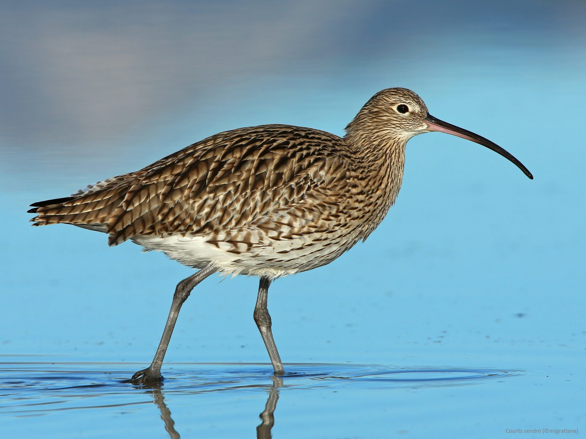
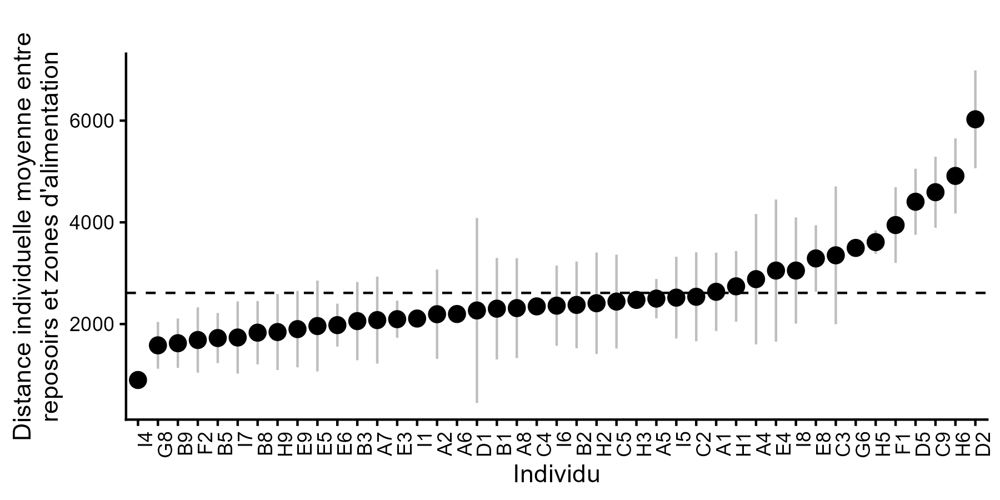
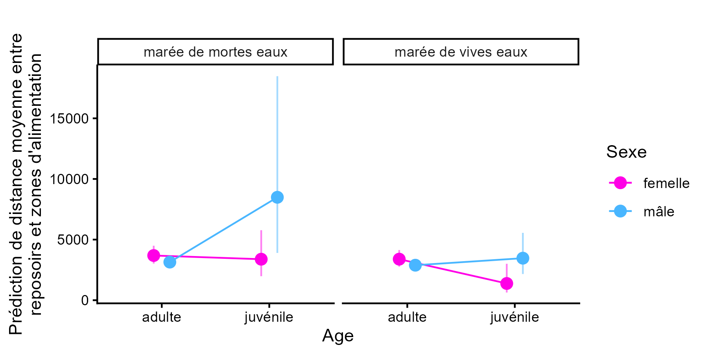
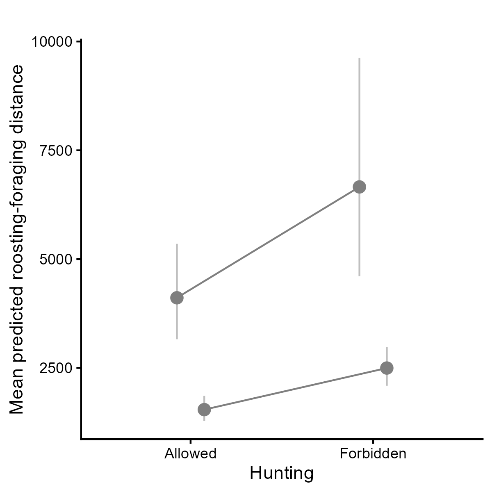
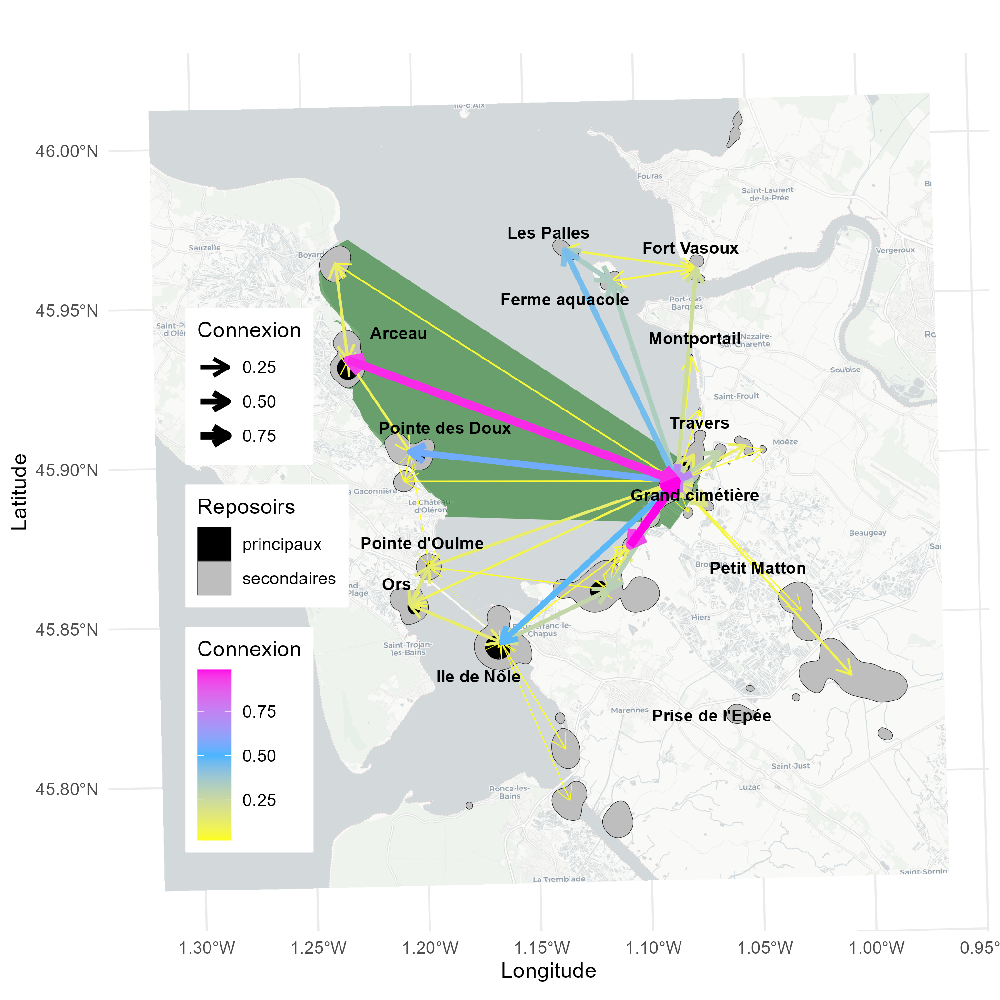

Utilisation de l’espace par le courlis cendré dans le site fonctionnel de la réserve naturelle nationale de Moëze-Oléron
1 Points clés
Contexte et objectifs : La réserve naturelle nationale de Moëze-Oléron (6 800 ha, Charente-Maritime), gérée par la LPO, accueille jusqu’à 100 000 oiseaux d’eau par an. Depuis 2015, un suivi GPS du courlis cendré (Numenius arquata), espèce « Vulnérable », est mené avec le CNRS et le MNHN pour comprendre son utilisation de l’espace et orienter la gestion durable des zones côtières.
Principaux résultats :
Utilisation de l’espace et domaines vitaux : Chaque individu exploite en moyenne un domaine vital de 640 m², avec une forte variabilité saisonnière. Les oiseaux passent environ 52 % de leur temps dans la réserve, confirmant son rôle essentiel. Les femelles, plus grandes et dotées d’un bec plus long, utilisent des espaces significativement plus vastes que les mâles.
Reposoirs et zones d’alimentation : Les courlis alternent entre reposoirs à marées hautes et zones d’alimentation à marées basses, situés dans et hors réserve, surtout dans le bassin de Marennes et le marais de Brouage. Les zones d’alimentation se concentrent sur les vasières côtières et les prés salés, tandis que les reposoirs se situent en zones plus abritées. Les jeunes individus parcourent de plus grandes distances entre repos et alimentation, signe d’un comportement plus exploratoire et/ou une moindre efficacité dans la recherche alimentaire en temps normal. La fidélité spatiale est marquée : les courlis reviennent régulièrement sur les mêmes reposoirs, notamment au Travers, au Grand Cimetière et à Arceau.
Effets des marées, saisons et conditions météorologiques : Les marées hautes et les submersions limitent les zones disponibles et renforcent la fidélité aux reposoirs connus. Les vents forts n’affectent pas significativement les comportements de repos mais peuvent modifier temporairement les zones d’alimentation. Aucune influence majeure des événements climatiques extrêmes n’a pu être détectée.
Effets de la chasse : Les données suggèrent un risque de dérangement dans les zones non protégées. Aucun effet direct à court terme n’a été mesuré, mais la superposition entre zones de chasse et zones d’alimentation clés révèle un potentiel de perturbation élevé.
Zones critiques identifiées : Plusieurs zones fonctionnelles majeures se situent hors du périmètre de la RNNMO, notamment dans le bassin de Marennes et les marais de Brouage. Ces espaces, essentiels à la connectivité écologique du courlis cendré et des autres espèces d’oiseaux d’eau très potentiellement, constituent des priorités de gestion concertées.
Enseignements clés pour la gestion : La réserve joue un rôle central, mais ne couvre qu’une partie du territoire fonctionnel de l’espèce. La préservation du courlis nécessite une gestion concertée à l’échelle du bassin des Pertuis charentais, incluant zones de chasse, marais et sites ostréicoles. Recommandations : créer des zones tampons autour des reposoirs sensibles, renforcer le dialogue avec les usagers (chasseurs, ostréiculteurs, pêcheurs), et poursuivre le suivi GPS à long terme.
Perspectives et besoins identifiés : Étendre le suivi à d’autres sites de capture. Améliorer les données sur la pression de chasse et la fréquentation humaine. Évaluer les effets combinés du climat, de la submersion et des usages littoraux. Consolider les partenariats territoriaux pour protéger les zones clés hors réserve.
Partenaires et financement : Étude conduite par la LPO France et la RNN de Moëze-Oléron, en collaboration avec le CNRS (LIENSs) et le MNHN (CESCO). Projet financé par le Fonds Vert et la Région Nouvelle-Aquitaine (Fonds Européen de Développement Régional, FEDER) dans le cadre du programme « Adaptation des limicoles aux changements climatiques ».


2 Contexte de l’étude
Créée en 1985, la Réserve Naturelle Nationale de Moëze-Oléron (RNNMO), située dans le département de la Charente-Maritime, s’étend sur près de 6 800 hectares entre le continent et l’île d’Oléron (Figure 1). Gérée par la Ligue pour la Protection des Oiseaux (LPO-France), elle abrite chaque année jusqu’à 100 000 oiseaux d’eau, dont de nombreux limicoles migrateurs et hivernants.

Située au cœur du bassin fonctionnel des Pertuis charentais, la réserve relie estrans, marais et zones conchylicoles, formant un maillon essentiel des grands couloirs migratoires atlantiques et contribuant à la conservation de nombreuses espèces d’oiseaux d’eau à l’échelle internationale (Figure 2).
.jpg)
Depuis 2015, la Ligue pour la Protection des Oiseaux (LPO-France), en collaboration avec les laboratoires LIttoral ENvironnement et Sociétés (LIENSs, UMR 7266, CNRS - Université de La Rochelle) et le Centre d’Écologie et des Sciences de la Conservation (CESCO, UMR 7204, CNRS - MNHN - Sorbonne Université), bague et équipe de GPS des courlis cendrés au sein de la RNNMO (Figure 3, Annexe 1).

3 Objectifs scientifiques
L’objectif général de cette étude est de mieux comprendre l’utilisation de l’espace par le courlis cendré dans le site fonctionnel de la RNNMO. Le courlis cendré est mis à contribution ici en tant qu’espèce parapluie dans le but d’identifier les zones et les temporalités prioritaires à préserver pour l’accueil et la conversation des limicoles dans la zone d’étude.
À partir de l’analyse des données issues de balises GPS posées sur plusieurs dizaines de courlis cendrés dans la RNNMO, les déplacements des oiseaux ont été analysés afin de dégager les principales zones utilisées. Ce travail s’inscrivant dans un contexte de fortes pressions anthropiques (chasse, pêche à pied, ostréiculture, tourisme, …) ainsi que d’un recul du trait de côte, entraînant une maritimisation progressive de la réserve naturelle, les variations utilisation de l’habitat par les courlis cendrés en fonction de changements environnementaux et pressions cinégétiques ont également été étudiées.
4 Le courlis cendré
Morphologie : Le courlis cendré (Figure 4) est le plus grand limicole d’Europe, avec une longueur de 55–65 cm pour une envergure de 90–110 cm et un poids de 600 à 1200 g. Son plumage est brun-gris tacheté. Son long bec courbé vers le bas mesure jusqu’à 19 cm. L’espèce présente un dimorphisme sexuel relativement marqué, avec les femelles en moyenne plus grandes et avec un bec plus long que les mâles.
Comportement social : C’est une espèce discrète, au comportement prudent. Il est territorial en période de reproduction, et grégaire hors reproduction.
Régime alimentaire : Il mange principalement des vers de terre, des insectes, des mollusques et des crustacés ; il complète ponctuellement son régime alimentaire par des graines et baies. Il s’alimente au sol ou par sondage dans la vase et les prairies humides.
Habitats : Sa reproduction s’effectue avec un nid au sol, souvent dissimulé dans la végétation en prairies humides, en landes, en tourbières, en marais. Il utilise des vasières intertidales, des estuaires, des prés salés, des prairies humides ou des pâtures pour son alimentation, et des vasières, des zones littorales, des lagunes, ou marais salants pour ses périodes de repos (Figure 1).
Saison de reproduction : Sa saison de reproduction s’étend d’avril à juillet. Les femelles adultes pondent en général entre 3 et 4 œufs chaque année. L’incubation dure environ 28 jours, et les jeunes deviennent autonomes à l’âge de 5 à 6 semaines.
Migration : Le courlis cendré est un migrateur partiel. Les populations du Nord-Est de l’Europe hivernent principalement en Europe occidentale et sur les côtes atlantiques africaines. En France, il y a une présence à l’année de courlis cendrés dans certaines régions littorales (ex. : baie de Somme, estuaire de la Loire), et une migration marquée en automne et au printemps.
Effectifs de population : La population mondiale est estimée à ~ 140 000 – 240 000 couples reproducteurs, avec ~ 97 000 – 167 000 couples en Europe. La population française s’élève à ~ 2 200 à 2 800 couples nicheurs (principalement dans le Nord-Ouest, Centre-Val de Loire, Grand Est) et ~ 20 000 à 30 000 individus hivernants (surtout sur le littoral Atlantique et dans le Sud-Est).
Tendance démographique et statuts de conservation : Le courlis cendré est en “déclin modéré” à “marqué” en Europe occidentale. Il connaît un fort recul de ses effectifs nicheurs en France depuis les années 1980 (perte estimée à plus de 30 %). Il est classé “Near Threatened” (quasi menacé en français) à l’échelle mondiale par l’IUCN et inscrit à l’Annexe II de la Convention de Bonn (CMS). En Europe, il est classé à l’Annexe II de la Convention de Berne et l’Annexe II.2 de la Directive Oiseaux (espèce chassable sous conditions), avec un déclin confirmé dans plusieurs États membres. En France, il est considéré comme “Vulnérable” et est inscrit à l’arrêté ministériel du 26 juin 1987 fixant la liste des espèces de gibier dont la chasse est autorisée mais bénéficie actuellement d’un moratoire de suspension de la chasse reconduit chaque année depuis la saison de chasse 2009/2010 (Annexe 2)

5 La zone d’étude
La zone d’étude englobe le site fonctionnel de la RNNMO, comprenant le bassin de Marennes, le marais de Brouage et la mer des Pertuis (Figure 5). L’aire d’étude s’étend sur une surface de 623.5 km² au Nord jusqu’à l’estuaire de la Charente, à l’Est jusqu’à la limite Est de la ville de Rochefort, au Sud jusqu’à l’estuaire de la Seudre, et à l’Ouest jusqu’à la façade Est de l’île d’Oléron, englobant ainsi la zone fonctionnelle de la RNNMO. L’aire d’étude est divisée en trois zones A, B et C pour faciliter l’analyse spatiale sur grain fin. Les individus sont bagués et équipés de GPS au sein de la RNNMO au site de baguage situé au Sud de la zone A (Figure 5).
6 Périodes de suivi des individus
Le jeu de données analysé est constitué de 2 226 196 points GPS enregistrés entre 2 016 et 2024 pour 80 individus. Le nombre de points GPS analysés par individu est d’un minimum de 365 et maximum de 118 314, pour une moyenne de 26 960 (Annexe 3). Les données comportent 35 femelles, 38 mâles, 60 adultes et 20 juvéniles. Le sexe n’a pas été identifié pour 7 individus (Figure 6).

7 Domaines vitaux
Chaque courlis cendré a un domaine vital, avec un noyau d’activité représentant la zone de fréquentation la plus intense (englobe 50 % des points GPS enregistrés pour l’individu, c’est-à-dire estimé au vertice à 50%, et nommée par la suite “domaine vital principal”), et un domaine vital plus large correspondant aux autres espaces qu’il fréquente moins fréquemment (englobe 95 % des points GPS, c’est-à-dire estimé au vertice à 95%, et nommée par la suite “domaine vital étendu”.
Les domaines vitaux principaux et étendus de chaque individu ont été représentés sur quatre carte différentes (regroupant 20 individus chacunes) pour faciliter leur visualisation (Figure 7, Figure 8, Figure 9, Figure 10).
Les individus ont des domaines vitaux principaux d’une surface moyenne 67 (± 33) m² et des domaines vitaux étendus d’une surface moyenne de 644 (± 389) m² (Figure 11).

La surface des domaines vitaux (principaux comme étendus) des mâles est significativement plus petite que celles des femelles (mâle versus femelle : -0.25 ± 0.1, p-value = 0.01, Annexe 4). La surface des domaines vitaux ne varie pas en fonction de l’âge (Annexe 4).

En moyenne, les courlis cendrés utilisent la RNNMO 52% de leur temps. Leurs déplacements au sein de leur domaine vital principal sont à 58% dans la RNNMO, et 46% de leurs déplacements au sein de leur domaine vital étendu sont dans la RNNMO (Figure 12).
8 Les reposoirs
A chaque marée haute, les courlis cendrés remontent hors des vasières et se regroupent dans des zones de repos appelés “reposoirs”.

Les reposoirs sont découpés en deux zones, une zone au vertice à 50%, nommée par la suite “reposoirs principaux” ; et une zone au vertice à 95%, nommée par la suite “reposoirs secondaires” (Figure 14, Figure 15 et Figure 16).
8.1 Reposoirs en fonction des caractéristiques biologiques des individus
8.1.1 Reposoirs en fonction de l’âge
Les reposoirs ont été estimés pour chaque catégorie d’âge : adulte et juvénile (Figure 17, Figure 18 et Figure 19).
Les courlis cendrés juvéniles étant moins expérimentés que les adultes, il est attendu qu’ils utilisent des reposoirs différents et moins favorables que ceux utilisés par les adultes.
Aucune différence marquée entre les reposoirs juvéniles et adultes n’a pu être détectée.
8.1.2 Reposoirs en fonction du sexe
Les reposoirs ont été estimés pour chaque catégorie de sexe : femelle et mâle (Figure 20, Figure 21 et Figure 22).
Les courlis cendrés mâles étant plus petits que les femelles, ils pourraient être exclus des reposoirs les plus favorables à l’issue d’une compétition pour l’espace avec les femelles.
Aucune différence marquée entre les reposoirs femelles et mâles n’a pu être détectée.
8.2 Reposoirs en fonction du calendrier
Les reposoirs ont été estimés pour chaque mois de l’année (Figure 23, Figure 24 et Figure 25).
Le site fonctionnel de la RNNMO est fortement impacté par les variations saisonnières environnementales (ex : météorologie, pêche, chasse, tourisme, cycles des marées à fort coefficient, etc), les reposoirs les plus favorables pourraient donc changer de façon cyclique au cours de l’année.
8.2.1 Reposoirs mensuels
Bien qu’il y ait une forte variation en reposoirs au cours des mois, il est difficile de dégager un patron clair à partir de ces résultats.
8.2.2 Reposoirs diurnes et nocturnes
Les reposoirs ont été estimés durant les périodes de jour et de nuit séparément (Figure 26, Figure 27 et Figure 28).
Il est attendu que les courlis utilisent des zones de repos plus restreintes la nuit que le jour.
Aucune différence marquée entre les reposoirs de diurnes et nocturnes n’a pu être détectée.
8.2.3 Reposoirs en fonction de la hauteur d’eau
Les reposoirs ont été estimés pour trois catégories de hauteur d’eau : marées hautes de mortes eaux, marées hautes de vives eaux, périodes de submersion de la lagune (?@fig-UDMap_kud_roosting_tide_strengh_A, ?@fig-UDMap_kud_roosting_tide_strengh_B, ?@fig-UDMap_kud_roosting_tide_strengh_C).
Il est attendu que les reposoirs se déplacent vers les zones en altitude (c’est-à-dire, plus loin de l’estran, plus à l’Est de la côte) en fonction de l’augmentation de la hauteur d’eau.
Les dates détectées de submersion de la lagune sont :
Aucune différence marquée entre les reposoirs en fonction de la hauteur d’eau n’a pu être détectée.
9 Les zones d’alimentation
A chaque marée basse, les courlis cendrés partent à la recherche de nourriture.

Les zones d’alimentation sont découpées en deux zones, une zone au vertice à 50%, nommée par la suite “zone d’alimentation principale” ; et une zone au vertice à 95%, nommée par la suite “zone d’alimentation secondaire” (Figure 33, Figure 34 et Figure 35).
9.1 Zones d’alimentation en fonction des caractéristiques biologiques des individus
9.1.1 Zones d’alimentation en fonction de l’âge
Les zones d’alimentation ont été estimées pour chaque catégorie d’âge : adulte et juvénile (Figure 36, Figure 37 et Figure 38).
Les courlis cendrés juvéniles étant moins expérimentés que les adultes, ils pourraient être assignés à des zones de recherche alimentaire différentes, et probablement moins favorables que celles utilisées par les adultes.
Aucune différence marquée dans les zones d’alimentation juvéniles et adultes n’a été détectée. A noter tout de même, les individus utilisant le marais de Brouage pour leur alimentation sont majoritairement juvéniles (Figure 38).
9.1.2 Zones d’alimentation en fonction du sexe
Les zones d’alimentation ont été calculées en fonction du sexe : femelle et mâle (Figure 39, Figure 40 et Figure 41).
Les mâles ayant des becs plus courts, leur permettant de fouiller moins profondément dans la vase, il est attendu que leurs zones d’alimentation soient moins étendues vers le large de la côte (et donc moins profondément sous la surface de l’eau) que celles des femelles.
Comme attendu, les zones d’alimentation semblent varier (bien que légèrement) en fonction des sexes des individus. En zone A, les mâles semblent restreints à des zones d’eaux moins profondes (plus proches de la côte) pour leurs zones secondaires et surtout principales d’alimentation, probablement dû à leur bec en moyenne plus court que celui des femelles.
9.2 Zones d’alimentation en fonction du calendrier
9.2.1 Zones d’alimentation mensuelles
Les zones d’alimentation ont été estimées pour chaque mois de l’année (Figure 42, Figure 43 et Figure 44).
Le site naturel est fortement impacté par les variations saisonnières environnementales (ex : météorologie, pêche, chasse, tourisme, cycles des marées de fort coefficient, phénologie des proies, etc), les zones d’alimentation les plus favorables pourraient donc changer de façon cyclique au cours de l’année.
Bien qu’il y ait une forte variation en zones d’alimentation au cours des mois, il est difficile de dégager un patron clair à partir de ces résultats.
9.2.2 Zones d’alimentation diurnes et nocturnes
Les zones d’alimentation ont été estimées durant les périodes de jour et de nuit séparément (Figure 45, Figure 46 et Figure 47).
Il est attendu que les courlis cendrés utilisent des zones d’alimentation plus restreintes la nuit que le jour.
Aucune différence marquée dans les zones d’alimentation diurnes et nocturnes n’a été détectée.
10 Utilisation de l’espace lors d’évènement climatiques extrêmes
Les évènements climatiques extrêmes sont actuellement en augmentation, en fréquence comme en intensité, dû aux changements climatiques (beniston2004). Les évènements climatiques extrêmes (tempêtes et inondations par exemple) sont suspectés d’être préjudiciables pour les courlis cendrés et on s’attend à ce que leur utilisation de l’espace en soit modifiée.
L’utilisation de l’espace pour les comportements de repos et d’alimentation pendant les jours avec évènements extrêmes sont comparés aux jours 7 jours avant les évènements extrêmes (considérés comme jours de référence). Les évènements extrêmes sont ici distingués en trois catégories : i) les évènements de vents forts (vitesse de vent supérieure aux 95 % des enregistrements sur la période 2016-2025), ii) les évènements de vents de Nord-Ouest (avec une orientation du vent entre 270 et 360 degrés) et iii) la combinaison des deux.
10.1 Reposoirs lors d’évènements climatiques extrêmes
10.1.1 Reposoirs lors de vents forts
Aucun effet marqué des vents forts sur les zones de repos n’a été détecté.
10.1.2 Reposoirs lors de vents de Nord-Ouest
Aucun effet marqué des vents de Nord-Ouest sur les reposoirs n’a été détecté.
10.1.3 Reposoirs lors de vents forts de Nord-Ouest
Aucun effet marqué des vents forts de Nord-Ouest sur les reposoirs n’a été détecté.
10.2 Zones d’alimentations lors d’évènements climatiques extrêmes
10.2.1 Zones d’alimentation lors de vents forts
Aucun effet marqué des vents forts sur les zones d’alimentation n’a été détecté.
10.2.2 Zone d’alimentation lors de vents de Nord-Ouest
Aucun effet marqué des vents d’Ouest sur les zones d’alimentation n’a été détecté.
10.2.3 Zone d’alimentation lors de vents forts de Nord-Ouest
Aucun effet marqué des vents forts de Nord-Ouest sur les zones d’alimentation n’a été détecté.
11 Distance entre les reposoirs et les zones d’alimentation

Les distances moyennes entre les zones d’alimentation et de repos ont été modélisées statistiquement en fonction du sexe, de l’âge et de la hauteur d’eau.

Les mâles juvéniles parcourent significativement plus de distance entre leurs zones d’alimentation et de repos que les femelles adultes (coef : 1.08 ± 0.42, p-value : 0.01), Annexe 4). Néanmoins, les juvéniles parcourent des distances marginalement plus courtes que les adultes lors des marées de vives eaux (coef : -0.81 ± 0.42, p-value : 0.05), Figure 67), Annexe 4). Il pourrait aussi y avoir une plus grande variabilité dans les distances parcourues par les juvéniles, surtout lors des marées de mortes eaux que par les adultes (Figure 67).
Les distances moyennes individuelles entre les zones d’alimentation et de repos ont également été modélisées statistiquement en fonction de la période de chasse.

Lorsque la période de chasse est prise en compte dans la sélection de modèle, les effets fixes significatifs sont simplifiés et plus marqués. Les mâles parcourent des distances moins importantes que celles des femelles (coef : -0.98 ± 0.17, p-value : < 0.01, Annexe 4). La distance entre les zones d’alimentation et de repos s’allonge lors de la période de chasse (coef : 0.48 ± 0.13, p-value : < 0.01, Figure 68, Annexe 4). Il semble également qu’il existe une plus grande variabilité dans les distances parcourues hors de la période de chasse (Figure 68).
12 Fidélité aux reposoirs
La fidélité aux reposoirs a été estimée par deux mesures complémentaires pour chacun des individu :
| Mesure | Définition | Interprétation |
|---|---|---|
| Equitabilité | Diversité d’utilisation des reposoirs | Equitabilité proche de 1 : utilisation équilibrée de plusieurs reposoirs (c’est-à-dire fidélité faible) ; équitabilité proche de 0 : comportements de repos concentrés sur peu de reposoirs différents (c’est-à-dire fidélité forte) |
| Taux de variation | Fréquence de déplacement entre reposoirs, mesure l’instabilité temporelle dans les choix de reposoirs | Plus la valeur est élevée, plus les changements de reposoir sont fréquents (c’est-à-dire fidélité faible) ; plus la valeur est faible, plus les changements de reposoir sont rares (c’est-à-dire fidélité forte) |
Ces mesures de variabilité versus fidélité aux reposoirs ont été calculées pour les reposoirs principaux et les reposoirs secondaires séparément.
Les variations d’équitabilité et du taux de variation en reposoirs ont été modélisées statistiquement par des modèles linéaires mixtes (effet aléatoire individu) généralisés (Gaussien, Gamma ou transformation log) en fonction de l’âge, du sexe, de la hauteur d’eau et leurs interactions deux à deux (effets fixes). Les résultats des meilleurs modèles sélectionnés par AIC sont présentés ici.

L’équitabilité en reposoirs principaux est significativement plus faible lors des submersions en comparaison aux marées de mortes eaux. Elle est aussi significativement plus faible chez les juvéniles en comparaison aux adultes (coef : 0.30 ± 0.09, p-value < 0.01), mais cette différence diminue significativement lors des marées de vives eaux (coef : 0.18 ± 0.06, p-value < 0.01) et des submersions (coef : 0.31 ± 0.08, p-value < 0.01). Enfin, l’équitabilité en reposoirs semble plus forte chez les mâles lors des marées de vives eaux (coef : 0.10 ± 0.05, p-value : 0.06) et est significativement plus forte lors des submersions en comparaison aux femelles (coef : 0.29 ± 0.07, p-value < 0.01, Figure 69 (a), Annexe 4).
Le taux de variation en reposoirs principaux est significativement plus faible chez les juvéniles en comparaison des adultes (coef : -0.07 ± 0.031, p-value = 0.03, Figure 69 (b), Annexe 4).
Les courlis cendrés pourraient ainsi être plus fidèles à leurs reposoirs principaux lors des fortes montées des eaux (marées de vives eaux et submersions) car leur environnement connu est restreint aux zones les plus en hauteur. En temps normal, les juvéniles sont plus fidèles que les adultes à leurs reposoirs et changent moins souvent de reposoirs principaux, ce qui pourrait refléter leur personnalité en moyenne moins exploratrice que celle des adultes. Néanmoins, les juvéniles semblent se disperser plus que les adultes lors des fortes montées des eaux. Enfin, les mâles sont moins fidèles à leurs reposoirs que les femelles lors des fortes montées des eaux.
Le taux de variation et l’équitabilité en reposoirs secondaires ne varient ni en fonction de l’âge, du sexe, ou de l’intensité des marées.
13 Connectivité entre les reposoirs
Les reposoirs sont connectés entre eux par les déplacements consécutifs effectués par les courlis cendrés à chaque cycle de marée. Il est attendu que les reposoirs les plus utilisés soient plus connectés aux autres reposoirs que les reposoirs utilisés de façon plus sporadique. Les reposoirs les plus proches devraient être plus connectés les uns aux autres que les reposoirs éloignés. Aussi, la connexion entre les reposoirs principaux est attendue plus forte que la connexion entre les reposoirs principaux et secondaires, et les reposoirs secondaires entre eux, car la densité d’individu dans ces zones est plus faible.


Les reposoirs sont fortement connectés entre eux grâce à une forte dynamique spatio-temporelle des courlis cendrés dans l’ensemble de la zone d’étude.
Comme attendu, les reposoirs principaux Travers et Grand cimetière, qui sont les plus proches, présentent la plus forte connexion. Aussi, les trois reposoirs principaux de la côte continentale, les reposoirs Grand cimetière, celui de l’Ile de Nôle et le reposoir entre ces deux derniers sont bien connectés. Il est intéressant de noter que les reposoirs Grand cimetière et Arceau sur l’île d’Oléron sont également fortement connectés (Figure 70 (a)).
Comme attendu également, un nombre très important de connexions de faible intensité ont été détectées entre les reposoirs principaux et secondaires, et secondaires entre eux. Néanmoins, deux principales connexions s’ajoutent à celles détectées pour les reposoirs principaux : entre le reposoir du Grand cimetière et des Palles, et celui entre le reposoir du Grand cimetière et de la ferme aquacole (Figure 70 (b)).
14 Évitement des chasseurs et des zones de chasses
14.1 Chasse à pied
La chasse à pied est autorisée sur le domaine public maritime (DPM) aux alentours de la RNNMO, mais interdite au sein de la RNNMO. Il est attendu que la présence de chasseurs et le bruit des tirs dérangent les courlis cendrés et que leurs comportements de repos et d’alimentation en soient perturbés.
Dates d’ouverture et de fermeture des saisons de chasse sur le DPM depuis 2018 :
XXX !!! il manque les infos et données entre 2016/2017 et 2017/2018 !!!
Afin de limiter les effets de potentielles variations saisonnières dans l’utilisation de l’espace par le courlis cendré, le jeu de données est restreint autour de la fermeture de la chasse : depuis les 15 derniers jours de la période de chasse (période de chasse) aux 15 premiers jours après la fermeture de la chasse (hors période de chasse).
Comme attendu, la période de chasse pourrait avoir un effet sur les zones d’alimentation ou les reposoirs. Les courlis cendrés pourraient explorer des zones plus éloignées de la RNNMO après la fermeture de la chasse. Néanmoins, le nombre resteint d’individus (n = 9) avec des points GPS enregistrés sur ces périodes ne permet pas une puissance statistique suffisante pour conclure.
Les effets de la présence, ou non, de chasseur, et du nombre de chasseur présents aux abord de la station de baguage et sur le DPM ont également été testé, mais aucun effet n’a pu être détecté sur l’utilisation de l’espace pour le repos et l’alimentation sur cette zone restreinte.
14.2 Chasse à la tonne

La chasse à la tonne, est une méthode de chasse au gibier d’eau pratiquée depuis une installation fixe et semi-enterrée appelée “tonne”. Celle-ci est aménagée à proximité d’un plan d’eau artificiel (mare de tonne) dans le but d’attirer (appelants vivants ou artificiels souvent utilisés) et de tirer les oiseaux migrateurs (principalement les anatidés).
En charente-maritime, la période de chasse s’ouvre généralement fin aout et s’étendu jusqu’à la fin février. Le tir est autorisé de nuit et jusqu’à 1h après le levé du soleil et 1h avant le coucher du soleil sur le DPM. Le tir est interdit de 9h00 à 19h00 sur les territoires situés hors du DPM et fluvial. Chaque tonne doit être déclarée auprès de la préfecture. Une distance minimale de 300 mètres est imposée entre deux tonnes.
Il est attendu que les tonnes de chasse constituent un dérangement non négligeable pour les oiseaux d’eau, même non chassés, comme c’est le cas actuellement pour le courlis cendré.
15 Zones critiques
Les principales reposoirs et d’alimentation estimées précédemment permettent de mettre en évidence des zones d’importance majeure pour les courlis cendrés dans la zone d’étude, mais pourtant en dehors des limites de protection de la RNNMO. Les emplacements des tonnes de chasses sont superposés à ces zones, mettant en evidence les zones de dérangements et de risques majeurs pour les oiseaux.
16 Pour aller plus loin
Ce travail est une première étape dans l’étude de l’utilisation de l’espace par le courlis cendré dans et aux alentours de la RNNMO, et plusieurs compléments pertinents pourrait être envisagés.
16.1 Un fort tropisme vers le site de baguage
Les contraintes techniques liées à l’écologie du courlis cendré et aux autorisations de baguage ont restreint la zone de capture des oiseaux à équiper sur la plage du grand travers (le long de la côte au sein de la réserve de Moëze-Oléron, Figure 5). Les oiseaux étudiés ici ont donc un tropisme marqué vers cette zone, représentant un biais non négligeable dans les analyses spatiales. Il serait particulièrement intéressant de poursuivre ce suivi en équipant des oiseaux sur d’autres sites autour de la réserve pour obtenir une vue plus généralisable à l’ensemble de la population de courlis cendré dans la région.
16.2 Manque de données de pression de chasse
Les effets de la chasse à pied et de la chasse à la tonnes ont été partiellement évalués dans cette étude. Néanmoins, la pression de chasse n’a pas pu être incluse dans les analyses par manque de données. Des données spatialisées tout au long des saisons de chasse (sur le nombre de chasseurs présents, la durée des sessions de chasse, la quantité de tirs effectués et/ou les quantités de prélèvement) seraient des ajouts très pertinents pour évaluer plus en détails les impacts de la chasse sur les comportements de déplacement du courlis cendré.
16.3 Quels sont les effets de la pêche à pied sur les comprtements de déplacement du courlis cendré ?
La zone d’étude est un lieu de pêche à pied non professionnelle particulièrement prisé. Le courlis cendré pourrait être dérangé par la présence de pêcheurs à pied pour sa recherche de nourriture comme pour ses déplacements depuis les zones d’alimentation vers les reposoirs à chaque cycle de marée. L’étude des effets de la pression de pêche à pied serait un ajout pertinent pour étendre notre compréhension des impacts anthropiques sur l’utilisation de l’espace par le courlis cendré dans la région.
17 Matériels et Méthodes
17.1 Nettoyage des données GPS
Le détail des étapes de nettoyage de jeu de données est à retrouver ici dans le document Readme associé à cet atlas.
En résumé, uniquement les points situés dans la zone d’étude ont été utilisés. Pour que chaque individu ait le même poids dans les analyses, un point toutes les 5 min a été estimé pour chaque individu. Néanmoins, le temps entre chaque point de localisation sauvegardé par individu pouvant varier et provoquer des périodes de carences de données plus ou moins longues. Ainsi donc, pour éviter d’analyser des positions GPS trop peu précises et de résolutions temporelles hétérogènes, les périodes avec moins d’un point par période de 5 min pour un individu donné ont été retiré des analyses. Une limite basse de 100 points estimés par individu sur une période supérieure à 28 jours (de deux cycles lunaires, directement liés aux cycles des marées) a été appliquée.
17.2 Résumé des méthodes utilisées pour les analyses
Le détail des méthodes est à retrouver ici dans le document Readme associé à cet atlas.
Assignation des comportements
Voir section “Les Reposoirs principaux” ici et “Les principales zones d’alimentation” ici
Chaque point GPS enregistré est associé à un comportement de repos, d’alimentation ou autre.
Comportements de repos : Un point GPS est considéré comme correspondant à du repos si : i) vitesse de déplacement inférieure ou égale à 1 Km/h (estimé par partir de la fonction speedfilter du package “adehabitatHR”), ii) entre 2h avant et 2h après une marée haute, iii) au-dessus du plus bas niveau d’eau de marée basse (au-dessus du Lowest Astronomical Tide en anglais) et iv) en dehors de la zone intertidal (déterminée par Litto3D data).
Comportement de recherche alimentaire : Un point GPS est considéré comme correspondant à de la recherche alimentaire si : i) vitesse de déplacement inférieure ou égale à 1 Km/h (estimé par partir de la fonction speedfilter du package “adehabitatHR”), et ii) entre 2h avant et 2h après une marée basse.
Autre comportement : Tous les points qui ne sont associés au comportements ni de repos ni d’alimentation.
Identification de l’âge des individus
Voir section “Reposoirs en fonction de l’âge” ici et section “zones d’alimentation en fonction de l’âge” ici
Le courlis cendré est considéré comme juvénile de sa sortie du nid au 1er septembre de l’année suivant leur éclosion. Au-delà de cette période, ils arborent leur plumage mature et sont considéré comme adulte. L’âge des individus est déterminé au baguage grâce à leur plumage. Les individus juvéniles lors du baguage et de la pose du GPS deviennent adultes après le 1er septembre de l’année suivante.
Identification du sexe des individus
Voir sections “Reposoirs en fonction du sexe” ici et “zones d’alimentation en fonction du sexe” ici
Le sexe des individus est déterminé au baguage par morphométrie, les femelles étant plus grandes que les mâles.
Classification des hauteurs d’eau
Voir section “reposoirs en fonction de la hauteur d’eau” ici
Le marégraphe utilisé pour obtenir les hauteurs d’eau (en m) est celui de l’ile d’Aix en priorité. Lorsque les données été manquante pour ce marégraphe, les hauteurs d’eau ont été prédites via une corrélation avec la cotinière et la rochelle. La variable choisie pour la hauteur d’eau est la variable “validé temps différé” en priorité, puis “brute temps différé”, puis “brute haute fréquence”. Les données de hauteurs d’eau ont été téléchargées via le site du SHOM. La hauteur d’eau est moyennée pour chaque période du grain temporelle choisie (5 min).
Basée sur l’expertise de terrain, les marées hautes ont été classées en fonction de la hauteur mesurée ou prédites. La marée est classifiée de marée de mortes eaux si la hauteur d’eau est inférieure à 4.8m, de marée de vives eaux entre 4.8m et 6.4m. Au-delà de 6.4m de hauteur d’eau, la marée provoque une submersion de la lagune.
Evènement climatique extrêmes
Voir section “Utilisation de l’espace lors d’évènements de vent extrêmes” ici“
Les évènements climatiques extrêmes (ECE) sont définis comme les évènements d’intensité supérieure au quartile 95 % des distributions du paramètres météorologiques sur la période 2015-2024. Trois variables ECE ont été calculé à partir de la vitesse et l’orientation moyenne journalière du vent : i) les évènements de vents forts : 5% des vitesses de vent les plus fortes, ii) les évènements de vents de Nord-Ouest : orientation du vent entre 270 et 360 degrés, et iii) les évènements de vents forts de Nord-Ouest : 5% des vitesses de vent les plus fortes et d’orientation entre 270 et 360 degrés. Un ECE est un jour où l’une de ces 3 variables a été détectées. L’utilisation de l’espace pour les comportements de repos et d’alimentation pendant les jours avec ECE détectés sont comparés aux jours j-7 avant les évènements extrêmes et considéré comme jour de référence.
Les données météorologiques utilisées sont issues du site météostat pour la station météorologique de La Rochelle.
Distribution d’utilisation de l’espace
Voir sections “Les Reposoirs principaux” ici et “Les principales zones d’alimentation” ici
Méthodes des kernels : L’ensemble des analyses spatiales sont basées sur des estimations de fonction de “distribution d’utilisation” de l’espace (Utilization Distribution, ou “UD” en anglais) qui décrivent la probabilité de présence d’un individu (ou d’un groupe d’individu) dans l’espace en fonction des points GPS qui lui ont été associés Worton (1989). Les distributions d’utilisation permettent donc d’estimer les zones les plus fréquemment utilisées par un animal. Elles ont été effectuées par la méthode dite du noyau (kernel en anglais) et avec les fonctions kernelUD et getverticeshr du package “adehabitatHR” Calenge (2006).
Paramètre de lissage (h) : L’estimation par noyau repose sur un paramètre de lissage (bandwidth, en anglais, nommé h), ici calculé selon la règle de Silverman adapté à chaque sous jeu de données pour chaque analyse, ajustée par un facteur de 1/2 pour permettre des analyses à grain fin (voir légende de chaque carte pour la valeur de h utilisée).
Echantillonnage aléatoire : Afin de garantir une représentativité (quasi)égale à chaque individu étudié malgré l’hétérogénéïté dans les quantités de point GPS enregistrés pour chacun, un échantillonnage aléatoire des points a été effectué à chaque analyse. Pour chaque individu et catégorie de variables analysées (comportement, zone, sexe, âge, etc…), 1000 points sont échantillonnés aléatoirement sans remise. La probabilité d’échantillonnage est fonction du temps entre chaque point, plus un point représente une période de temps peu enregistré, plus il aura de probabilité d’être échantillonné. Lorsqu’un individu présente moins de 1000 point pour une combinaison de variable données, tous les disponibles pour cette combinaison sont sélectionnés.
Sous jeu de données utilisé : Suivant les analyses, le jeu de données utilisé pour estimer les distributions d’utilisation de l’espace est différent et restreint à la zone A, B et C, au comportement ciblé (repos ou alimentation), et/ou à la (ou les) variable(s) d’intérêt(s) sans valeur inconnues (c’est-à-dire sans NA).
Grain spatial : Les analyses spatiales ont été effectués avec un grain spatial fin en grille de 10 m x 10 m.
Domaines vitaux
Voir section “Domaines vitaux” ici
Les domaines vitaux (home range en anglais) ont été estimés par les mêmes méthodes de distributions spatial d’utilisation et de kernels comme précédemment, mais pour chaque individu séparément sur l’ensemble des points GPS, tous comportements confondus.
Deux enveloppes de domaine vital sont calculées pour chaque individu : i) le domaine vital étendu qui correspond à l’enveloppe englobant 95 % de la surface d’utilisation, ii) le noyau d’activité correspondant aux 50 % de surface d’utilisation, représente les zones de fréquentation la plus intense.
Distance entre les reposoirs et d’alimentations
Voir section “Distance entre les reposoirs et les zones d’alimentation” ici“
La distance entre la zone d’alimentation et de repos a été estimé comme la distance entre les paires de centres géographiques individuels des zones d’alimentation et de repos à chaque cycle de marée.
Fidélité aux reposoirs
Voir section “Fidélité aux reposoirs” ici
L’équitabilité en reposoirs mesure la répartition relative des fréquences des reposoirs utilisés par un individu (x). Elle mesure à quel point la diversité observée (HHH) se rapproche de la diversité maximale possible (log(R)(R)log(R)) pour un nombre donné de catégories.
On définit d’abord la richesse en reposoirs, comme la somme des différents reposoirs utilisés par un individu :
\[ \text{Richesse} = |\{x_1, x_2, \ldots, x_n\}| = \text{Nombre de valeurs uniques dans } x \]
et l’indice de Shannon en reposoirs d’un individu, comme suit :
\[ Shannon = -\sum_{i=1}^{R} p_i \log(p_i), \quad \text{où } p_i = \frac{n_i}{n} \]
L’équitabilité est alors calculée par :
\[ \text{Équitabilité} = \frac{Shannon}{\log(Richesse)} \]
Le taux de variation mesure la fréquence de changement de reposoirs au cours du temps, et a été calculé comme suit :
\[ \text{Taux de variation} = \frac{\sum_{i=1}^{n-1} \mathbf{1}\big(x_{i+1} \neq x_i\big)}{n - 1} \]
Connectivité entre les reposoirs
Voir section “Connectivité entre les reposoirs” ici
La connectivité entre les reposoirs est calculée en fonction des transitions dans le temps entre les zones de repos pour chaque individu. À chaque itération, un échantillon aléatoire de 300 points GPS est sélectionné pour chaque individu afin de limiter les biais dus à la surreprésentation de certains individus très suivis. Chaque point est associé au reposoir correspondant, et les données sont triées par individu et par ordre chronologique. On identifie ensuite, pour chaque individu, le reposoir visité juste après le reposoir courant, ce qui permet de construire des paires de transitions temporelles. Le nombre de fois qu’une transition d’un reposoir vers un autre se produit est compté, puis ces valeurs sont normalisées entre 0 et 1 pour rendre les poids comparables. Enfin, en répétant cette opération plusieurs fois (ici 30 itérations), on calcule la moyenne des poids de transition, ce qui donne une mesure robuste de la connectivité temporelle entre chaque paire de reposoirs. La connectivité moyenne a été calculée entre les reposoirs principaux, et entre les reposoirs principaux et secondaires.
Période de chasse à pied
Voir section “Chasse à pied” ici
L’effet de la chasse à pied a été estimé en définissant deux période distinctes : une periode de chasse fermée, et une periode de chasse ouverte.
Chaque année, la période de chasse fermée correspond aux 15 premiers jours après la fermeture de la chasse, et la période de chasse ouverte correspond aux 15 derniers jours de la saison de chasse.
L’effet de la période de chasse à pied ouverte ou fermées sur les zones d’alimentation et reposoirs ont ensuite été calculé comme les précedentes analyses spatiales par estimations de fonction de “distribution d’utilisation” de l’espace via la méthode des kernels pour les deux périodes distinctes.
17.3 Données et codes
Toutes les analyses, graphiques et cartes ont été réalisés avec le logiciel R version 4.4.2.
Les données utilisées sont disponibles ici : OneDrive - Data courlis
Les codes produits sont disponibles ici : Github
18 Bibliographie
- Beniston, M., & Stephenson, D. B. (2004). Extreme climatic events and their evolution under changing climatic conditions. Global and planetary change, 44(1-4), 1-9.
- Calenge, C. (2006) The package “adehabitat” for the R software: a tool for the analysis of space and habitat use by animals. Ecol. Model. 197 (3), 516–519.
- Worton, B.J. (1989). Kernel methods for estimating the utilization distribution in home-range studies. Ecology 70, 164–168.
19 Auteur.ices et contributions
Cette étude a nécessité la participation d’une moyenne de XXX personnes sur le terrain durant environ XXX nuits par an depuis 2016, anisi qu’une personne à temps plein (35h/semaine) pendant 6 mois pour l’analyse des données et la rédaction de cet atlas.
Travail de terrain, capture et baguage des oiseaux : Pierre Rousseau (RNN Moëze-Oléron), Loïc Jomat (RNN Moëze-Oléron), Adrien Chaigne (RNN Moëze-Oléron), Pierrick Bocher (RNN Moëze-Oléron), Frédéric Jiguet (RNN Moëze-Oléron), et beaucoup d’autres personnes !
Analyses statistiques et spatiales : Suzanne Bonamour (LPO France, Rochefort), Gwenaël Quaintenne (LPO France, Rochefort)
Rédaction : Suzanne Bonamour (LPO France, Rochefort)
Recherche de financements et partenaires : Adrien Chaigne (RNN Moëze-Oléron)
Comité scientifique : Pierrick Bocher (Univ. La Rochelle), Frédéric Jiguet (MNHN, CESCO, Paris)
Pour toutes questions, contacter Adrien Chaigne adrien.chaigne@lpo.fr ou Suzanne Bonamour suzanne.bonamour@lpo.fr.
20 Annexes
20.1 Annexe 1 : Tableau des correspondance bagues et ID
20.2 Annexe 2 : Historique du statut de chasse du courlis cendré
| Saisons de chasse | Statut de chasse | Références |
|---|---|---|
| Avant 2008/2009 | Chassable du 1er dimanche d’août sur le DPM et les zones humides côtières, du 21 août en zones humides intérieures et de l’ouverture générale (septembre) dans les autres secteurs au 31 janvier sur tout le territoire. | DEVN0816509A, DEVN0650169A |
| De 2008/2009 à 2011/2012 | Moratoire total adopté pour 5 ans (abrogé un an avant sa fin, le 3 févr. 2012). | DEVN0816513A |
| 2012/2013 | Moratoire partiel : chassable sur le DPM et les zones humides côtières jusqu’au 13 février. Moratoire à l’intérieur des terres. | DEVL1203355A |
| De 2013/2014 à 2018/2019 | Moratoire partiel (renouvellement de l’arrêtés 5 ans + 1 an) : Chassable sur le DPM et les zones humides côtières jusqu’au 31 janvier. Moratoire à l’intérieur des terres. | DEVL1312194A, TREL1820083A |
| Depuis 2019/2020 | Moratoire total. Tentative de réouverture de la chasse lors de la saison 2019/2020 (sous quotas 6000 individus) mais cassé en référé devant le Conseil d’Etat fin août. Soit chassable 1 mois, en théorie, sur la saison 2019/2020 avant mortatoire complet. Et depuis renouvellement annuel par arrêté. | ECLI:FR:CEORD:2019:433434.20190826, ECLI:FR:CECHR:2020:433432.20201217 |
20.3 Annexe 3 : Nombre de point GPS analysés par individu
20.4 Annexe 4 : Résultats complets des modèles statistiques présentés dans cet atlas
Les modélisations statistiques ont toutes fait l’oject de sélection de modèles par AIC et de vérification des diagnostiques à postériori.
Seuls les résultats des meilleures modèles retenus pour chaque problématique sont présentés ici.
20.4.1 Domaines vitaux
Méthode : Modèle linéaire généralisé, fonction de lien Gamma (log)
Modèle : aire ~ domaine vital principal ou étendu + sexe
| coefficient | erreur standard | t value | p-value | |
|---|---|---|---|---|
| intercept | 1.81 | 0.16 | 11.44 | < \(10^{-15}\) *** |
| domaine vital(étendu) | 0.05 | 0.00 | 25.38 | < \(10^{-15}\) *** |
| sexe(mâle) | -0.25 | 0.09 | -2.78 | 0.01 ** |
Paramètre de dispersion pour la fonction Gamma : 0.29
Déviance nulle : 203.15 sur 145 degrés de liberté
Déviance résiduelle : 42.44 sur 143 degrés de liberté
AIC : 1765.3
Nombre d’itérations du score de Fisher : 5
20.4.2 Distance entre les reposoirs et les zones d’alimentation
Distance “zone d’alimentation” vs “reposoirs” en fonction du sexe, de l’âge et de la hauteur d’eau
Méthode : Modèle linéaire généralisé, fonction de lien Gamma (log)
Modèle : distance moyenne “zone d’alimentation” vs “reposoirs” ~ sexe * âge + hauteur d’eau * âge
| coefficient | erreur standard | t value | p-value | |
|---|---|---|---|---|
| intercept | 8.21 | 0.10 | 81.31 | < \(10^{-15}\) *** |
| sexe(mâle) | -0.16 | 0.11 | -1.52 | 0.13 |
| âge(juvénile) | -0.09 | 0.29 | -0.30 | 0.78 |
| hauteur d’eau(vives eaux) | -0.09 | 0.09 | -0.94 | 0.35 |
| sexe(mâle):âge(juvénile) | 1.08 | 0.42 | 2.57 | 0.01 * |
| âge(juvénile):hauteau d’eau(vives eaux) | -0.81 | 0.42 | -1.94 | 0.05 . |
Paramètre de dispersion pour la fonction Gamma : 0.26
Déviance nulle : 37.64 sur 134 degrés de liberté
Déviance résiduelle : 34.63 sur 129 degrés de liberté
AIC : 2360.1
Nombre d’itérations du score de Fisher : 5
Distance “zone d’alimentation” - “reposoirs” en fonction du sex et de la période de chasse
Jeu de données resteint au moins de janvier (période de chasse ouverte) et février (période de chasse fermée).
Méthode : Modèle linéaire généralisé, fonction de lien Gamma (log).
Modèle : distance moyenne “zone d’alimentation” vs “reposoirs” ~ sexe + période de chasse
| coefficient | erreur standard | t value | p-value | |
|---|---|---|---|---|
| intercept | 8.32 | 0.14 | 61.88 | < \(10^{-16}\) *** |
| sexe(mâle) | -0.98 | 0.17 | -5.96 | < \(10^{-7}\) *** |
| période de chasse(fermée) | 0.48 | 0.13 | 3.67 | < \(10^{-2}\) ** |
Paramètre de dispersion pour la fonction Gamma : 0.09
Déviance nulle : 5.78 sur 25 degrés de liberté
Déviance résiduelle : 2.33 sur 23 degrés de liberté
AIC : 419.21
Nombre d’itérations du score de Fisher : 4
20.4.3 Fidélité aux reposoirs
Equitabilité
Méthode : Modèle linéaire mixte par REML. T-tests par la méthode Satterthwaite (lmerModLmerTest)
Modèle : équitabilité ~ sexe * hauteau d’eau + âge * hauteau d’eau + (1 | individu)
REML critère de convergence : 47.5
Résidus standardisés :
| min | 1Q | median | 3Q | max |
|---|---|---|---|---|
| -2.98 | -0.50 | -0.09 | 0.46 | 2.93 |
Effets aléatoires :
| groupe | variance | écart-type |
|---|---|---|
| individu | 0.08 | 0.29 |
| résidu | 0.04 | 0.19 |
Nombre d’observation : 314, groupes : individu, 72
Fixed effects :
| coefficient | erreur standard | df | t value | p-value | |
|---|---|---|---|---|---|
| intercept | 0.49 | 0.06 | 86.09 | 7.65 | < \(10^{-10}\) *** |
| sexe(mâle) | -0.12 | 0.08 | 87.09 | -1.55 | 0.13 |
| hauteau d’eau(submersion) | -0.34 | 0.05 | 243.37 | -6.44 | < \(10^{-9}\) *** |
| hauteau d’eau(vives eaux) | -0.06 | 0.04 | 239.82 | -1.54 | 0.13 |
| âge(juvénile) | -0.30 | 0.09 | 88.90 | -3.26 | < \(10^{-2}\) ** |
| sexe(mâle):hauteau d’eau(submersion) | 0.29 | 0.07 | 245.42 | 4.15 | < \(10^{-4}\) *** |
| sexe(mâle):hauteau d’eau(vives eaux) | 0.10 | 0.05 | 242.70 | 1.88 | 0.06 . |
| hauteau d’eau(submersion):âge(juvénile) | 0.31 | 0.08 | 245.12 | 3.64 | < \(10^{-3}\) *** |
| hauteau d’eau(vives eaux):âge(juvénile) | 0.18 | 0.06 | 242.87 | 3.03 | < \(10^{-2}\) ** |
Taux de variation
Méthode : Modèle linéaire mixte par REML. T-tests par la méthode Satterthwaite (lmerModLmerTest)
Modèle : taux de variation ~ âge + (1 | individu)
REML critère de convergence : -498.2
Résidus standardisés :
| min | 1Q | mediane | 3Q | max |
|---|---|---|---|---|
| -3.03 | -0.37 | -0.16 | 0.35 | 4.12 |
Effets aléatoires :
| groupe | variance | écart-type |
|---|---|---|
| individu | 0.01 | 0.11 |
| résidu | 0.01 | 0.90 |
Nombre d’observation : 314, groupes : individu, 72
Fixed effects:
| coefficient | erreur standard | df | t value | p-value | |
|---|---|---|---|---|---|
| intercept | 0.13 | 0.02 | 69.57 | 85.27 | < \(10^{-1}\) *** |
| âge(juvénile) | -0.07 | 0.03 | 70.08 | -2.23 | 0.03 * |